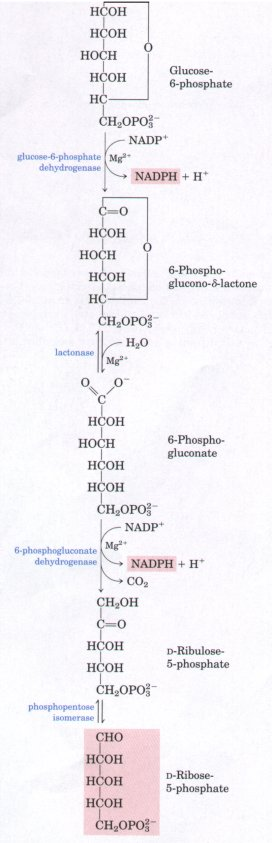
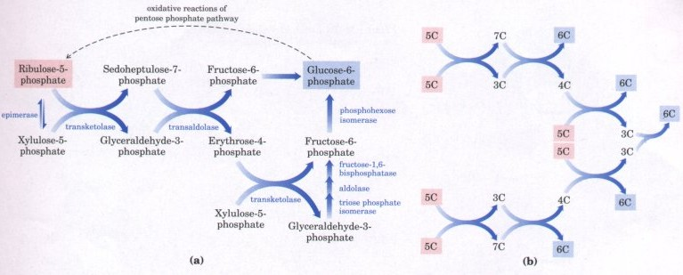
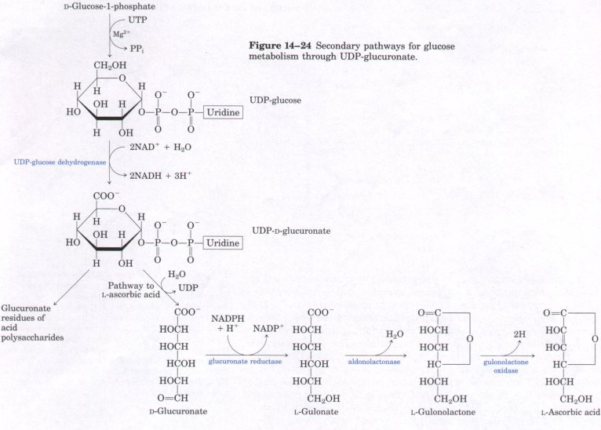
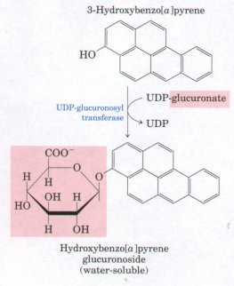

ribose-5-phosphate + CO2 + 2 NADPH + 2H+
ribose-5-phosphate + CO2 + 2 NADPH + 2H+
In animal tissues, most of the glucose
consumed is catabolized via glycolysis to pyruvate. Most
of the pyruvate in turn is oxidized via the citric acid
cycle. The main function of glucose catabolism by this
route is to generate ATP. There are, however, other
catabolic pathways taken by glucose that lead to
specialized products needed by the cell, and these
pathways constitute part of the secondary metabolism of
glucose. Two such pathways produce pentose phosphates and
uronic and ascorbic acids.Oxidative Decarboxylation Yields Pentose Phosphates and NADPHThe pentose phosphate pathway, also called the phosphogluconate pathway (Fig. 14-22), produces NADPH and ribose-5-phosphate. Recall that NADPH is a carrier of chemical energy in the form of reducing power (Chapter 13). In mammals this function is especially prominent in tissues actively carrying out the biosynthesis of fatty acids and steroids from small precursors, particularly the mammary gland, adipose tissue, the adrenal cortex, and the liver. The biosynthesis of fatty acids requires reducing power in the form of NADPH to reduce the double bonds and carbonyl groups of intermediates in this process (Chapter 20). Other tissues less active in synthesizing fatty acids, such as skeletal muscle, are virtually lacking in the pentose phosphate pathway. A second function of the pentose phosphate pathway is to generate essential pentoses, particularly D-ribose, used in the biosynthesis of nucleic acids (Chapter 21). The first reaction of the pentose phosphate pathway is the enzymatic dehydrogenation of glucose-6-phosphate by glucose-6-phosphate dehydrogenase to form 6-phosphoglucono- δ-lactone, an intramolecular ester, which is hydrolyzed to the free acid 6-phosphogluconate by a specific lactonase (Fig. 14-22). NADP+ is the electron acceptor, and the overall equilibrium lies far in the direction of formation of NADPH. In the next step 6-phosphogluconate undergoes dehydrogenation and decarboxylation by 6-phosphogluconate dehydrogenase to form the ketopentose D-ribulose- 5-phosphate, a reaction that generates a second molecule of NADPH. Phosphopentose isomerase then converts D-ribulose- 5-phosphate into its aldose isomer n-ribose-5-phosphate. In some tissues, the pe6ntose phosphate pathway ends at this point, and its overall equation is then written |
 Figure 14-22 The oxidative reactions of the pentose phosphate
pathway, leading to D--ribose-5-phosphate and producing
NADPH. |
Glucose-6-phosphate + 2 NADP+ + H2Oribose-5-phosphate + CO2 + 2 NADPH + 2H+
The net result is the production of NADPH for reductive biosynthetic reactions and the production of ribose-5-phosphate as a precursor for nucleotide synthesis.
In tissues that require primarily NADPH rather than ribose-5phosphate, pentose phosphates are recycled into glucose-6-phosphate in a series of reactions (Fig. 14-23) that will be examined in more detail in Chapter 19. First, ribulose-5-phosphate is epimerized to xylulose-5-phosphate. Then, in a series of rearrangements of the carbon skeletons of sugar phosphate intermediates, six five-carbon sugar phosphates are converted into five six-carbon sugar phosphates (Fig. 14-23b), completing the cycle and allowing continued oxidation of glucose-6-phosphate with the production of NADPH.

Figure 14-23 (a) The nonoxidative reactions of the pentose phosphate pathway convert pentose phosphates back into hexose phosphates, allowing the oxidative reactions (see Fig. 14-22) to continue. The enzymes transaldolase and transketolase (discussed in more detail in Chapter 19) are specific to this pathway; the other enzymes also serve in the glycolytic or gluconeogenic pathways. (b) A simplified schematic diagram showing the pathway leading from six pentoses (5C) to five hexoses (6C). Note that this involves two sets of the interconversions shown in (a).
In the nonoxidative part of the pentose phosphate pathway (Fig. 14-23a), transketolase, a thiamine pyrophosphate-dependent enzyme, catalyzes the transfer of a two-carbon fragment (C-1 and C-2) of xylulose-5-phosphate to ribose-5-phosphate, forming the seven-carbon product sedoheptulose-7-phosphate; the remaining three-carbon fragment of xylulose is glyceraldehyde-3-phosphate. (The detailed mechanism for transketolase is shown in Fig. 19-25.) Transaldolase then catalyzes a reaction similar to the aldolase reaction in glycolysis: a three-carbon fragment is removed from sedoheptulose-7-phosphate and condensed with glyceraldehyde-3-phosphate, forming fructose-6phosphate; the remaining four-carbon fragment of sedoheptulose is erythrose-4-phosphate. Now transketolase acts again, forming fructose-6-phosphate and glyceraldehyde-3-phosphate from erythrose-4phosphate and xylulose-5-phosphate. Two molecules of glyceraldehyde-3-phosphate formed by two iterations of these reactions can be converted into fructose-1,6-bisphosphate (Fig. 14-23b). The cycle is then complete: six pentose phosphates have been converted back into five hexose phosphates.
All of the reactions of the nonoxidative part of the pentose phosphate pathway are readily reversible, and thus also provide a means of converting hexose phosphates into pentose phosphates. As we shall see in Chapter 19, this is essential in the fixation of CO2 by photosynthetic plants.
Another secondary pathway for glucose leads to two specialized products: D-glucuronate, important in the detoxification and excretion of foreign organic compounds, and L-ascorbic acid or vitamin C. AIthough the amount of glucose diverted into this secondary pathway is very small compared with the large amounts of glucose proceeding through glycolysis and the citric acid cycle, the products are vital to the organism.
In this pathway (Fig. 14-24) glucose-1-phosphate is first converted into UDP-glucose by reaction with UTP. The glucose portion of UDP-glucose is then dehydrogenated to yield UDP-glucuronate, another example (see also Fig. 14-13) of the use of UDP derivatives as intermediates in the enzymatic transformations of sugars.

| UDP-glucuronate is the glucuronosyl
donor used by a family of detoxifying enzymes that act on
a variety of relatively nonpolar drugs, environmental
toxins, and carcinogens. The conjugation of these
compounds with glucuronate (glucuronidation)
converts them into much more polar derivatives that are
more easily cleared from the blood by the kidneys and
excreted in the urine. For example, the sedative drug
phenobarbital, the anti-AIDS drug AZT, and the
hydroxylated form of the carcinogen benzo[a]pyrene
(3-hydroxybenzo[a]pyrene) all undergo glucuronidation
catalyzed by UDP-glucuronosyl transferases in the human
liver (Fig. 14-25). Chronic exposure to the drug or toxin
induces increased synthesis of the enzyme specific for
that compound, increasing tolerance for the drug or
resistance to the toxin. UDP-glucuronate is also the
precursor of the glucuronate residues of such acidic
polysaccharides as hyaluronate and chondroitin sulfate
(see Fig. 1120). D-Glucuronate is an intermediate in the conversion of D--glucose into L-ascorbic acid (Fig. 14-24). It is reduced by NADPH to the sixcarbon sugar acid L-gnlonate, which is converted into its lactone. LGulonolactone then undergoes dehydrogenation by the flavoprotein gulonolactone oxidase to yield L-ascorbic acid. Some animal species, including humans, guinea pigs, monkeys, some birds, and some fish lack the enzyme gulonolactone oxidase and are unable to synthesize ascorbic acid; they require it ready-made in the diet (as vitamin C). |
 Figure 14-25 Detoxification of 3-hydroxybenzo[a]pyrene, a toxic component of tobacco smoke. Glucuronidation by transfer of glucuronate from UDP-glucuronate converts the nonpolar toxin to a polar compound more easily removed by the kidneys. |
Humans who do not obtain enough vitamin C in the diet develop the serious disease scurvy, in which the synthesis of connective tissue containing collagen is defective. The symptoms of scurvy include swollen and bleeding gums with loosened teeth, stiffness and soreness of joints, bleeding under the skin, and slow wound healing. For centuries the disease was very common among sailors on long sea voyages, during which no fresh fruit was available, and in 1753 the Scottish naval surgeon James Lind showed that scurvy was prevented and cured by ingestion of citrus juice. In 1932 the antiscurvy vitamin C was isolated from lemon juice and named ascorbic acid (from the Latin scorbutus, meaning "scurvy").